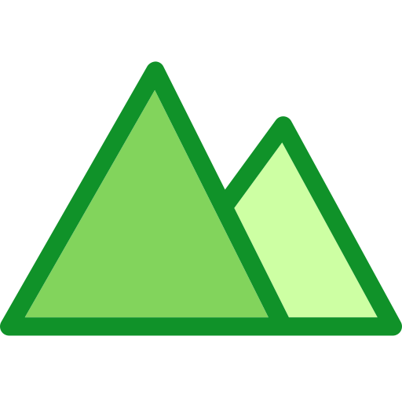

ProfilGeoAdmin
Dessiner une ligne sur la carte ci-dessous. Double clic pour la terminer, puis générer le profil.
Pas de profil généré
| Longueur suivant le relief |
- |
| Longueur planimétrique |
- |
| Altitude de départ |
- |
| Altitude d'arrivé |
- |
| Dénivelé |
- |
| Pente moyenne |
- |
| Altitude minimum |
- |
| Altitude maximum |
- |
| Pente maximum |
- |